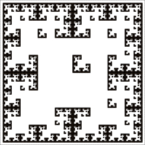

IFS and Memory
Recognizing lower-step memory images
Can either of these images be generated with a
1-step
memory IFS? Give a reason for all "No" answers. Give the apprpriate
1-step
memory table for all "Yes" answers.

Click each image for the solution.
Return to
Exercises
.